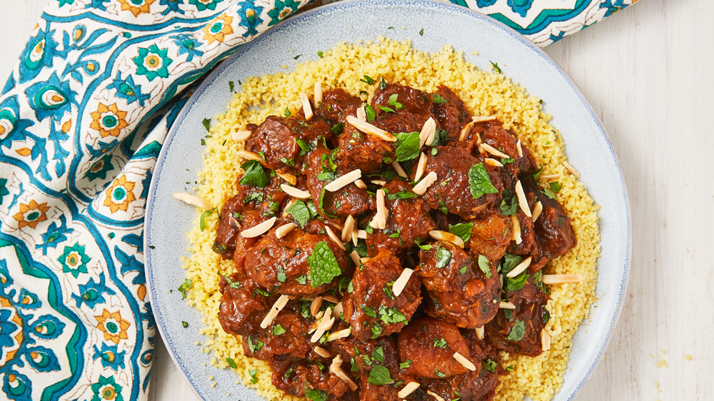

Back to Kitchen
Tagine

Moroccan casserole named after the clay dish it's cooked in and containing strong, fragrant flavours.The recipe presented is the one of the tagine of lamb and merguez
Ingredients
For the chermoula marinade
- 1 tbsp each ground cumin, paprika and turmeric
- 1 tsp hot chilli powder
- 2 large red onions, roughly chopped
- 3 garlic cloves
- thumb-sized piece ginger, roughly chopped
- 200ml/ 7fl oz olive oil
- 200ml/ 7fl oz lemon juice (about 4 lemons)
- 1 tbsp honey
- large handful flat-leaf parsley, roughly chopped
- large handful coriander, roughly chopped
For the tagine
- 6 lamb shanks or a 1kg/2lb 4oz piece lamb or mutton shoulder (if using shoulder ask the butcher to cut it into 10cm chunks on the bone)
- 4 tbsp olive oil
- 2 carrots, sliced
- 2 red onions, sliced
- 12 dried prunes
- 1 tbsp honey
- juice ½ lemon
- 8 merguez sausages (optional)
- 2 preserved lemons, homemade (see recipe below) or bought, pulp scooped out, rinsed and finely sliced
- 2 mint sprigs, to serve
- harissa, to serve (see recipe below)
Steps
- For the marinade, roast the spices in a dry pan for a couple mins until fragrant. Put remaining marinade ingredients in a blender and process to a smooth paste, then add the roast spices and blend again to combine. Place the lamb in a large bowl and pour over the marinade. Leave in the paste overnight, or for at least 2 hrs to absorb all the flavours.
- Heat oven to 160C/140C fan/gas 3. In a large roasting tin, big enough to fit the meat in one single layer, heat the oil and place over a high heat on the hob. Remove the meat from the marinade, wiping off and reserving any excess, then brown shanks on all sides in the hot oil.
- Add remaining marinade to the dish along with the carrots, onions and prunes, then pour in 1 litre water. Cover the dish tightly with foil and cook in a low oven for 3½-4 hrs until the meat is tender and falling away from the bone. Add the honey, lemon juice and seasoning and keep warm.
- If using, fry the sausages until cooked through, then add to the tagine. Serve the meat in a large bowl with the sauce spooned over, then scatter with the preserved lemons and mint, and serve the harissa on the side.
Back to Kitchen